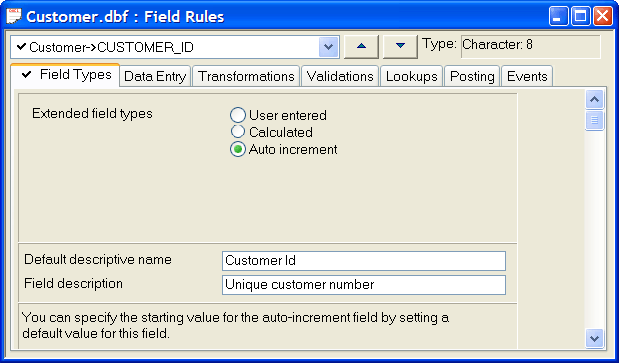

Field Rules: Field Types
The Field Types tab of the Field Rules Editor lets you define basic formatting and options for a field.

There are three types of fields
User-Entered Field: The user enters a value for the field.
Calculated Field: Alpha Five automatically calculates field values.
Auto-Increment Field: Alpha Five assigns incrementing field values as records are entered.
 Note : Alpha Anywhere stores
a calculated field value in the record when the record is saved. In comparison,
a layout calculated field does not store a value in the record.
Note : Alpha Anywhere stores
a calculated field value in the record when the record is saved. In comparison,
a layout calculated field does not store a value in the record.
The default field type is user-entered, which relies on the user for a field value.
A Calculated Field Rule calculates a table field's value when you enter or change data. Refer to Calculated Fields for more information.
 Note : You should not
use a calculated field, but instead use a default expression when the user may optionally change the field value.
Note : You should not
use a calculated field, but instead use a default expression when the user may optionally change the field value.
For example, you might use a calculated field to calculate membership expiration dates. If you have a user-entered field called START_DATE, you can assign another field called EXP_DATE the following calculated field expression:
|
MEMBER->START_DATE + 365 |
This returns an expiration date that is one year after the starting date. The following example sets the fullname calculated field using the values in the firstname and lastname fields.
When you define a character, numeric, or date field with an auto-Increment rule, an incremented value is automatically filled in when you create a new record, which you can accept or overwrite. If you overwrite the default value, successive records are incremented from the value you enter.
Auto-Increment fields are useful for assigning unique identification numbers for invoices, parts, products, and customers. By default, character fields are incremented using number characters (like "0001", "0002"). If you do not enter a value for the first record, Alpha Five automatically starts a character field at "1".
When a field is incremented, it follows the previous record's field conventions. For example, the value "A1" will be "A2" in the following field, then "A3" and so on. Additionally, you can increment both letter and number field values. The auto-increment field rule takes into account deleted records.
 Note : Auto-increment
fields work with grid components in web publishing applications.
Note : Auto-increment
fields work with grid components in web publishing applications.
 Note : New auto-increment
field values always have the same number of characters as the
previous value. The length of the auto-increment field does not affect
the length of the values that are generated.
Note : New auto-increment
field values always have the same number of characters as the
previous value. The length of the auto-increment field does not affect
the length of the values that are generated.
When you create an auto-increment field rule, Alpha Five creates an index on the field. This ensures that auto-increment field values can never be duplicated.
In the Control Panel select the table and click Table > Edit Field Rules.
On the Field Types tab in the Extended field types group, click the Auto increment radio button.
Optionally, change the <span class=Control>Default descriptive name</span> for this calculated field.
Optionally, change the <span class=Control>Field description.
To provide an initial value for the field:
Display the Data Entry tab.
Change Default mode to "Simple default expression".
Enter the initial auto-increment value (or a value produced by an expression) in the Default value field. The value must be the same data type as the table field. Click
 to use the <span class=Screen>Expression Builder</span> to help you define the value.
to use the <span class=Screen>Expression Builder</span> to help you define the value.
Examples of Auto-increment Fields
|
Base Expression |
Sequence Generated |
|
12345 |
12346, 12347, 12348 ... 99999, 00000 |
|
"0000000" |
"00000001", "00000002", "00000003", ... "99999999", "00000000" |
|
"ABC" |
"ABD", "ABE", "ABF", ... "ZZZ", "AAA" |
|
"ABC-0001" |
"ABC-0002", "ABC-0003", "ABC-0004", ... "ABC-9999", "ABD-0000" |
 Note : If the maximum
value that the field supports is reached, the value rolls over to the
minimum value and begins again.
Note : If the maximum
value that the field supports is reached, the value rolls over to the
minimum value and begins again.
Use Default Descriptive Names when you want to provide longer, helpful descriptions of fields for users. Default Descriptive Names replace standard field labels on layouts.
For example, if a table has a field called CUSTOMER_NUMBER, you could change the Default Descriptive Name to "Customer ID#." Alpha Five displays "Customer ID#" as field labels on forms and browses, but the actual field name is still CUSTOMER_NUMBER.
Default Descriptive Names can be especially useful if you create several layouts for a table. You only type in a Default Descriptive Name once, rather than editing field labels for every layout.
Text entered in the Field Description appears in the Status Bar (below the window bar, at the bottom of the Alpha Five screen) when a field is selected on a form. If the Field Description does not appear, make sure Status Bar is checked on the View menu.
To delete a calculated field rule you must:
Erase the Calculated field expression text box.
Select the Extended field types User entered radio button.
See Also
How Auto-Increment Fields Work